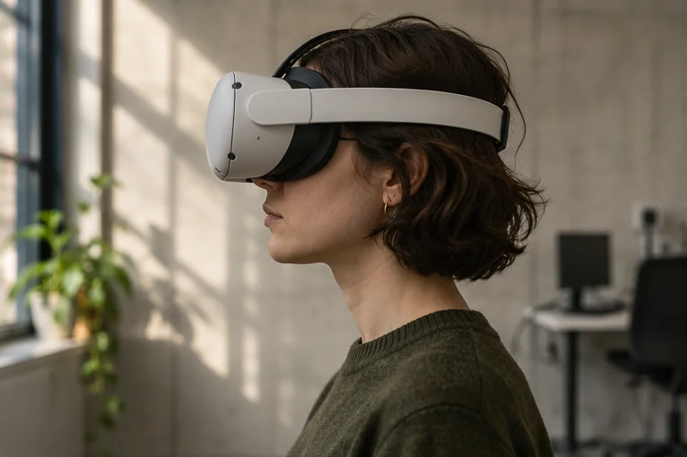

Imagen ilustrativaPABELLÓN DE INVESTIGACIÓN/ MADRID, ES
Francisco
Rocabado, Ph.D.
Científico cognitivo · Investigador en RV · Psicolingüista experimental
Explorando la cognición humana más allá del laboratorio.
Investigo cómo las personas perciben, procesan y utilizan la información de su entorno. Mi investigación combina psicología experimental, psicolingüística, realidad virtual y tecnologías emergentes para desarrollar nuevas formas de estudiar la cognición humana.
MURO DE PUBLICACIONES01 / 04
Índice del pabellón
ZONA 02 / PERFIL ACADÉMICO
Sobre mí
Francisco Rocabado es científico cognitivo e investigador experimental. Estudia cómo interactúa la cognición humana con el lenguaje, la percepción y la información del entorno.
Investigador y docenteCentro de Investigación Nebrija en Cognición (CINC)
Universidad Nebrija · Madrid, España
Universidad Nebrija · Madrid, España
Su trabajo combina la psicolingüística experimental, la realidad virtual inmersiva, el seguimiento ocular y los métodos computacionales para examinar los procesos cognitivos en contextos controlados y naturalistas.
Le interesa especialmente cómo la realidad virtual puede ampliar la investigación experimental más allá de los paradigmas de laboratorio y enriquecer la medición del comportamiento humano.
FR
ZONA 03 / GALERÍA DE INVESTIGACIÓN
Líneas de investigación
01La realidad virtual como herramienta de investigación experimental
02Reconocimiento visual de palabras y dinámica de la lectura

Estudio del reconocimiento visual de palabras, el procesamiento léxico, la información ortográfica y los efectos del contexto ambiental en la conducta lectora.
Métodos
Decisión léxica · Tareas de lectura · Seguimiento ocular
Publicaciones relacionadas
03Cognición ambiental y ruido visual

Estudio de cómo la complejidad del entorno y la información visual influyen en la atención, la percepción, la memoria y el rendimiento cognitivo.
Métodos
Entornos de 360° · Seguimiento ocular móvil · YOLO · SAM2 · OpenCV
Publicaciones relacionadas
Proyecto relacionado · RENOISE04Evaluación cognitiva e investigación experimental aplicada

Desarrollo de métodos experimentales para investigar la cognición en distintos contextos y poblaciones, con especial atención a la validez ecológica y la medición de conductas significativas.
Métodos
Evaluación conductual · Control inhibitorio · Validez ecológica
Publicaciones relacionadas
EXPOSICIÓN DE PROYECTOS
Proyectos destacados
RENOISE
Ruido visual ambiental y cognición
Estudio de los efectos de la complejidad visual en entornos cotidianos mediante realidad virtual, visión artificial, seguimiento ocular y experimentación cognitiva.
Detalles del proyecto
En las escenas cotidianas conviven numerosos estímulos visuales. RENOISE emplea entornos de 360 grados y seguimiento ocular móvil para estudiar hacia dónde se dirige la mirada. Herramientas de visión artificial como YOLO, SAM2 y OpenCV permiten analizar estos entornos.

SONORA
Sonido, música y bienestar en el transporte urbano
Investigación sobre la influencia de los entornos sonoros y la música en el bienestar subjetivo y las respuestas fisiológicas en el transporte.
Detalles del proyecto
El proyecto aborda el transporte urbano como entorno sonoro. Su pregunta central es cómo se relacionan los sonidos de un trayecto, incluida la música, con la experiencia de los pasajeros y sus respuestas fisiológicas.
Otros proyectos
Información del proyecto pendiente.
[PROJECT_TITLE] · [PROJECT_DESCRIPTION] · [PROJECT_IMAGE] · [PROJECT_URL]
ZONA 04 / ARCHIVO DE PUBLICACIONES
Publicaciones seleccionadas
2025
Scientific Reports · 15, 23118
Transforming language research from classic desktops to virtual environments
Del ordenador de sobremesa al entorno virtual en la investigación del lenguaje
Realidad virtual · Psicolingüística · Métodos experimentales
Detalles del estudio
¿Cómo influye el entorno en una tarea lingüística? Este estudio conecta la investigación del lenguaje en ordenador con los entornos virtuales inmersivos.

2024
Frontiers in Psychology · 15, 1433781
Weathering words: a virtual reality study of environmental influence on reading dynamics
Palabras a la intemperie: un estudio de realidad virtual sobre la influencia del entorno en la lectura
Realidad virtual · Psicolingüística · Cognición ambiental
Detalles del estudio
La realidad virtual permite variar las condiciones meteorológicas para estudiar cómo se procesan las palabras en un contexto ambiental.

2023
Computers in Human Behavior · 139, 107563
Exploring the (lack of) facilitative effect of emoji for word processing
Estudio de la (ausencia de) facilitación del procesamiento de palabras mediante emojis
Psicolingüística · Métodos experimentales
Detalles del estudio
Una investigación experimental sobre la capacidad de los emojis para facilitar el procesamiento de las palabras.
2022
Behavioral Sciences · 12(11), 444
Assessing Inhibitory Control in the Real World Is Virtually Possible: A Virtual Reality Demonstration
Evaluación del control inhibitorio en el mundo real mediante una demostración en realidad virtual
Realidad virtual · Métodos experimentales
Detalles del estudio
Una demostración de cómo evaluar el control inhibitorio en un entorno virtual más próximo a la vida cotidiana.
ZONA 05 / CIENCIA ABIERTA
Herramientas para estudiar la cognición
De los experimentos inmersivos a la investigación reproducible.
OSFGitHubPendiente
- Realidad virtual
- WorldViz Vizard · SightLab VR · Desarrollo de experimentos inmersivos · Registro de la conducta
- Programación y análisis
- R · Python · Modelos de efectos mixtos · Análisis de potencia mediante simulación · Visualización de datos · Análisis reproducible
- Seguimiento ocular y visión artificial
- Análisis de datos oculométricos · Conducta visual · OpenCV · YOLO · SAM2 · Análisis visual del entorno
- Plataformas experimentales
- PsychoPy · Pavlovia · Paradigmas de experimentación conductual
ZONA 06 / DOCENCIA
Docencia y supervisión
Docencia
- Metodología de la Investigación e Innovación en Educación
- TIC en Educación
- Psicología del Lenguaje
- Psicología de la Adolescencia
Supervisión y talleres
- Dirección de trabajos de fin de grado
- Dirección de trabajos de fin de máster
- Talleres de gestión bibliográfica con Zotero
- Alfabetización científica y metodología experimental
TRAYECTORIA ACADÉMICA
Formación y colaboración
2025
Doctorado en Educación y Procesos Cognitivos
Universidad Nebrija · Cum Laude y Mención Internacional
Colaboración
Experiencia investigadora y colaboración internacional
- Universidad NebrijaEspaña
- Universitat de ValènciaEspaña
- Bournemouth UniversityReino Unido
- RPTU Kaiserslautern-LandauAlemania
- Skidmore CollegeEstados Unidos
- Pontificia Universidad Católica del PerúPerú
Actividad destacada
ACTIVIDAD ACADÉMICA
Revisión por pares
Scientific Reports · Virtual Reality · Quarterly Journal of Experimental Psychology · Cognition and Emotion
ZONA 07 / CONTACTO
Exploremos nuevas formas de estudiar la cognición
Me interesan las oportunidades de colaboración académica e intercambio científico y el desarrollo de nuevos enfoques experimentales para estudiar la cognición humana.
jrocabado@nebrija.esCentro de Investigación Nebrija en Cognición (CINC)
Universidad Nebrija
Madrid, España